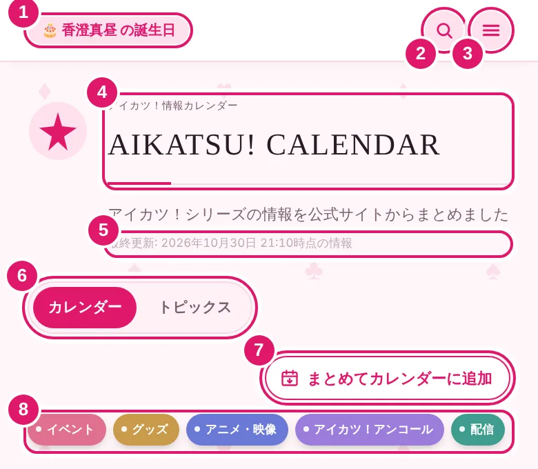
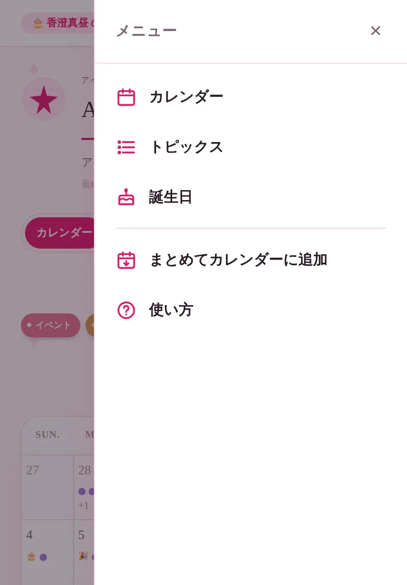
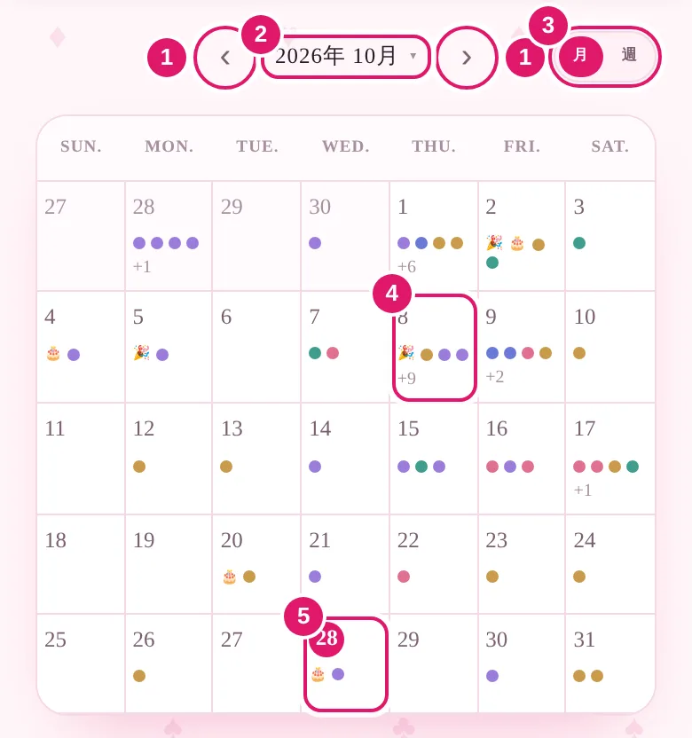
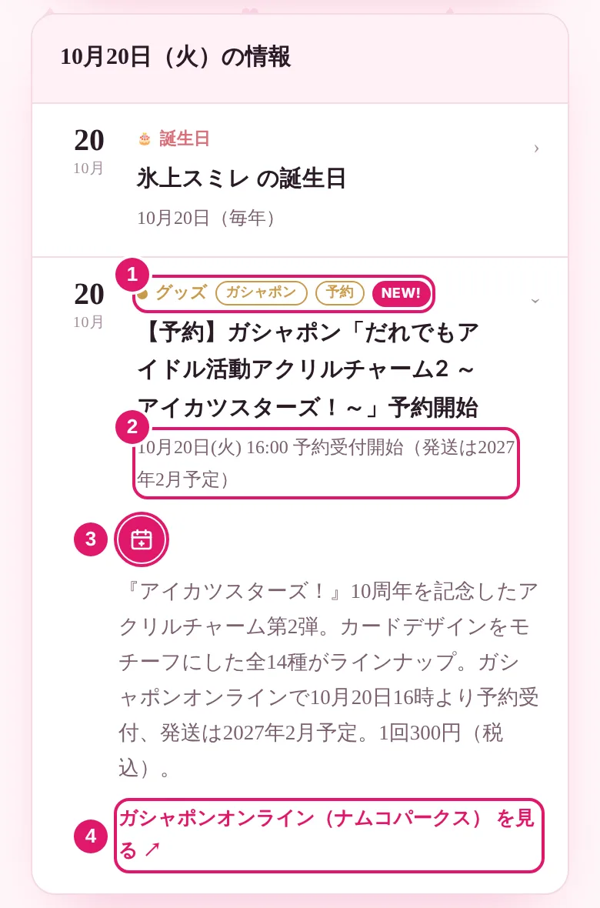

使い方
アイカツ！情報カレンダーの見方と、便利な機能の使い方をまとめました。
1このサイトについて
「アイカツ！」シリーズのグッズ・イベント・配信・キャラクターの誕生日・作品の周年などを、日付ごとにまとめた非公式のファンメイドカレンダーです。
情報は公式サイトや公式X（旧Twitter）をもとに集めています。イベントへの参加や商品の予約・購入の前には、各予定のリンク先にある公式の情報を必ず確認してください。
2画面の見方

- 1今日の誕生日・周年今日が誕生日のキャラクターや、周年を迎える作品が表示されます。
- 2検索キーワードで予定を探せます（5. 絞り込み・検索）。
- 3メニュー主な機能にすぐ移動できます。
- 4タイトル押すと、今月のカレンダーに戻ります。
- 5最終更新情報を最後に更新した日時です。
- 6カレンダー／トピックスの切り替え日付で見るか、一覧で見るかを選べます。
- 7まとめてカレンダーに追加予定をまとめて自分のカレンダーに入れられます（7. 自分のカレンダーに追加する）。
- 8カテゴリ見たい種類の予定だけに絞り込めます。
メニュー
右上の ☰ を押すと、メニューが開きます。カレンダー・トピックス・誕生日の一覧・まとめて追加・この使い方ページに、どこからでも移動できます。

3カレンダーで見る

- 1前へ／次へ前後の月（週表示のときは週）に移動します。
- 2年月押すと年と月を選んで、離れた月にすぐ移動できます。
- 3月／週1か月表示と1週間表示を切り替えます。
- 4予定のある日点の色が予定の種類を表します。1日に5件以上あるときは「+件数」で表示されます。
- 5今日日付が丸で囲まれます。🎂は誕生日、🎉は周年です。
点の色とカテゴリ
日付を押して、その日の予定を見る
日付を押すと、カレンダーの下にその日の予定が一覧で表示されます。予定を押すと詳細が開きます。
日程未定のトピックス
開催日や発売日がまだ決まっていない情報は、カレンダーの下の「日程未定のトピックス」にまとめて表示されます。
4予定の詳細を見る

- 1カテゴリとバッジ予定の種類と、下のバッジが表示されます。
- 2日付・時間など開催日・発売日・予約期間などの要点です。
- 3カレンダーに追加この予定を自分のカレンダーに入れられます（7. 自分のカレンダーに追加する）。
- 4情報源へのリンク公式サイトや公式Xの元の情報を開きます。
バッジの意味
期間のある情報は「開始」と「終了」の2件に分けています
POP UP SHOP の開催期間や予約の受付期間など、始まりと終わりがある情報は、開始日と終了日（締切日）の2件に分けて載せています。カレンダーのどちらの日付からでも、見落とさずに確認できます。
5絞り込み・検索
カテゴリで絞り込む
カテゴリのボタンを押すと、そのカテゴリの予定だけが表示されます。複数選ぶこともでき、もう一度押すと解除されます。何も選んでいないときは、すべての予定が表示されます。
キーワードで検索する
右上の 🔍 を押して文字を入力すると、タイトルや説明文にその言葉を含む予定が一覧で表示されます。検索をやめるときは、入力欄の × を押します。
6トピックスで見る
「トピックス」では、情報を日付順のリストで見られます。

- 1カテゴリカレンダーと同じように絞り込めます。
- 2並び順
「新着」…公開された日が新しい順。期間のある情報は「開始」の1件だけを表示します。
「スケジュール順」…今日以降の予定を日付の近い順に表示。過去の予定は、リストの下の「過去の情報を表示」から見られます。
「誕生日」…キャラクターの誕生日を月別に表示します。 - 3ページ10件ずつ表示します。数字を押して移動します。
- 4NEW!新しく公開・追加された情報です。
誕生日の一覧
「誕生日」を選ぶと、キャラクターの誕生日が月ごとに表示されます。今月の欄に印が付き、今日が誕生日のキャラクターには🎂が付きます。名前を押すと、公式のキャラクター紹介ページが開きます。

7自分のカレンダーに追加する
予定は、iPhone のカレンダーや Google カレンダーなど、普段使っているカレンダーに追加できます。1件ずつ追加する方法と、まとめて追加する方法があります。
1件ずつ追加する
予定の詳細にある 📅 ボタンを押し、追加先を選びます。
- Googleカレンダーに追加：Google カレンダーの登録画面が開きます。
- Outlookに追加：Outlook の登録画面が開きます。
- iOSカレンダーに追加：予定のファイル（.ics）を開き、iPhone のカレンダーに追加します。
- ファイルをダウンロード(.ics)：ほかのカレンダーアプリ用に、予定のファイルを保存します。
誕生日は「毎年くり返す予定」として追加されます（Outlook はその年の1回分のみ）。
まとめて追加する
「まとめてカレンダーに追加」を押すと、期間と内容を選んで、予定をまとめた1つのファイル（.ics）を保存できます。

- 1期間「今月」「今後3か月」「今後1年」「今後すべて」から選べます。
- 2日付の指定開始日と終了日を自由に指定できます。終了日を空欄にすると、開始日以降のすべてが対象です。
- 3内容追加するカテゴリを選びます（最初は誕生日以外のすべて）。
- 4さらに絞り込みガシャポンだけ、予約商品だけにできます。
- 5件数追加される予定の数です。日程未定の情報は含まれません。
- 6ダウンロードファイルを保存します。
誕生日は「毎年くり返す予定」として、周年は年ごとに「○周年」の予定として入ります。期間のある情報は「開始」「終了」の両方が入ります。
ファイルの取り込み方
8よくある質問
情報はいつ更新されますか？
定期的に自動で更新しているほか、新しい情報に気づき次第、手動でも更新しています。最後に更新した日時は、カレンダーページ上部の「最終更新」で確認できます。
載っていない情報や、間違いを見つけたときは？
お知らせいただくためのフォームを準備中です。準備ができしだい、ここにご案内します。
カレンダーに取り込んだ予定は、自動で更新されますか？
されません。取り込んだのはその時点の情報なので、最新の内容はこのサイトや、予定のリンク先の公式情報でご確認ください。
同じファイルを2回取り込むとどうなりますか？
予定ごとに決まった識別番号を付けているので、多くのカレンダーアプリでは同じ予定として扱われ、重複しにくくなっています。アプリによっては重複して登録されることがあるため、その場合は手動で削除してください。
スマホのホーム画面に追加できますか？
できます。アプリのように、ホーム画面から開けるようになります。
- iPhone（Safari）：画面下の共有ボタン →「ホーム画面に追加」
- Android（Chrome）：右上のメニュー →「ホーム画面に追加」
リンク先のページが開けません。
公式側でページが移動したり、公開が終了したりしていることがあります。お手数ですが、公式サイトのトップページや公式Xから最新の情報をご確認ください。
9情報源・免責事項
情報のもとにしている公式サイト・公式Xの一覧は、カレンダーページのいちばん下にある「リンクを表示する」から見られます。
©BNP/BANDAI, DENTSU, TV TOKYO ©BNP/BANDAI, DENTSU, TV TOKYO, BNArts ©BNP/AIKATSU 10TH STORY ©AIKATSU ACADEMY ©︎Aikatsu, Pripara 10th Project ©BNP/AIKATSU STARS 10TH PROJECT